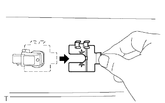
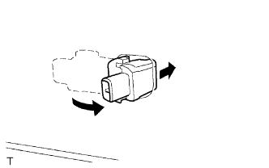

CẢM BIẾN SIÊU ÂM > THÁO |
| 1. NGẮT CÁP ÂM RA KHỎI ẮC QUY |
| 2. THÁO NẮP BA ĐỜ XỐC SAU |
 |
Dùng dụng cụ tháo kẹp, tháo 4 kẹp ra.
Tháo 8 vít.
 |
Hãy dán băng dính bảo vệ phía dưới tai xe sau.
Nhả khớp 12 vấu và tháo nắp ba đờ xốc.
w/ Hệ thống cảnh báo khoảng cách:
Ngắt 2 giắc nối.
| 3. THÁO CÁI HÃM CẢM BIẾN SIÊU ÂM NO.1 |
|  |
Tháo cái hãm cảm biến siêu âm ra như được chỉ ra trên hình vẽ.
| 4. THÁO CẢM BIẾN SIÊU ÂM NO.1 |
|  |
Tháo cảm biến siêu âm ra khỏi tấm bắt ba đờ xốc sau như được chỉ ra trên hình vẽ.